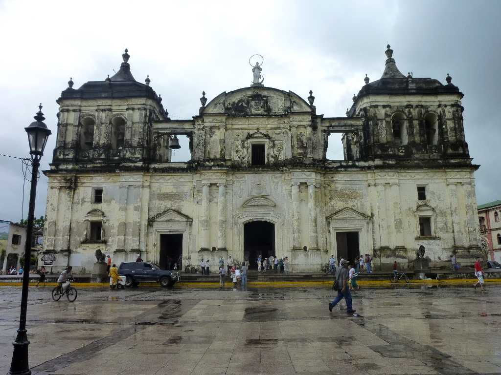
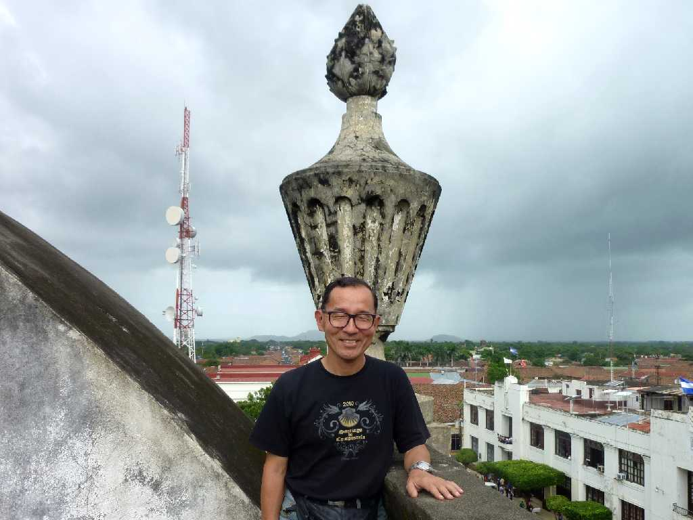
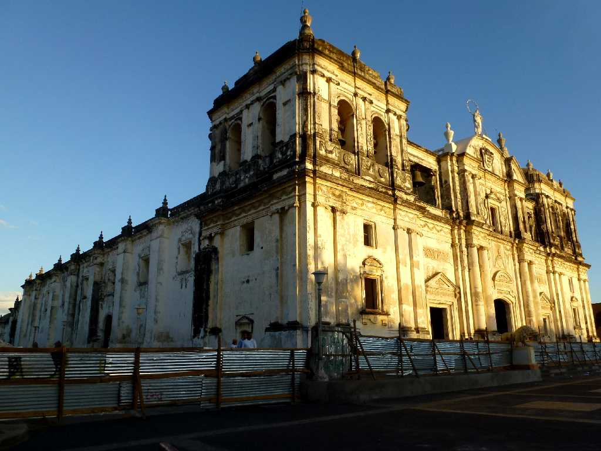
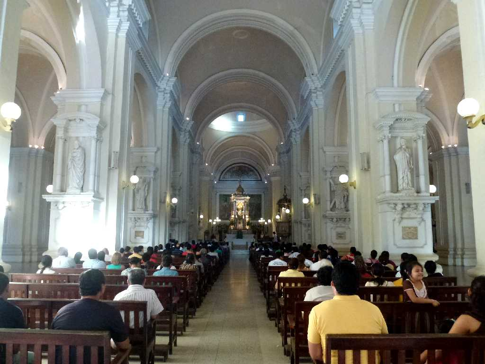
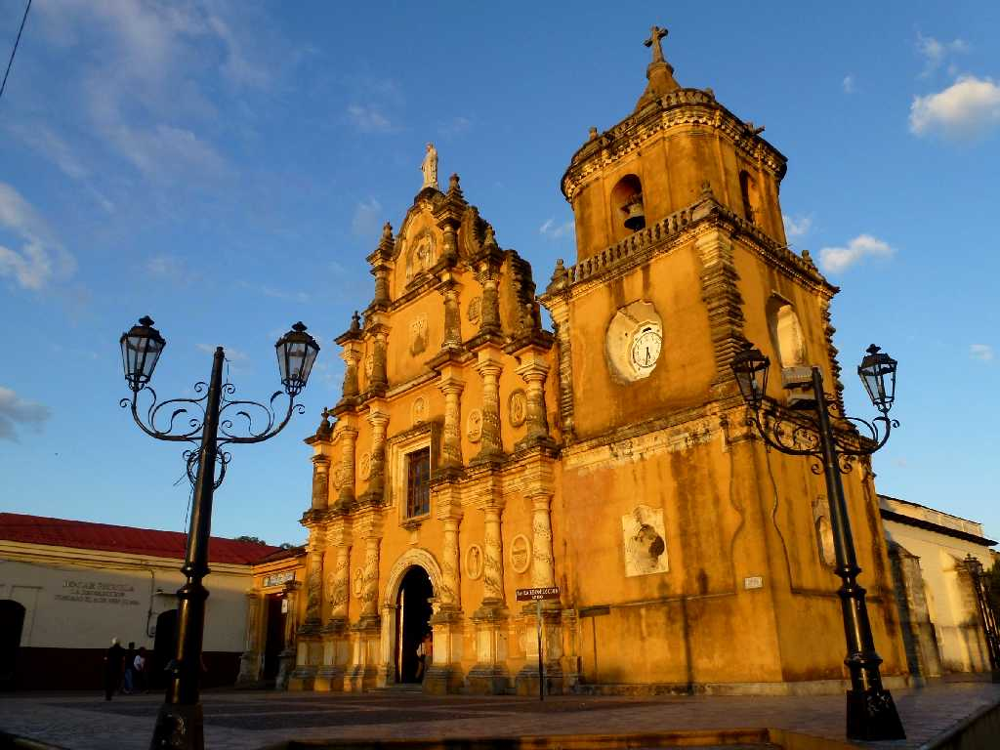
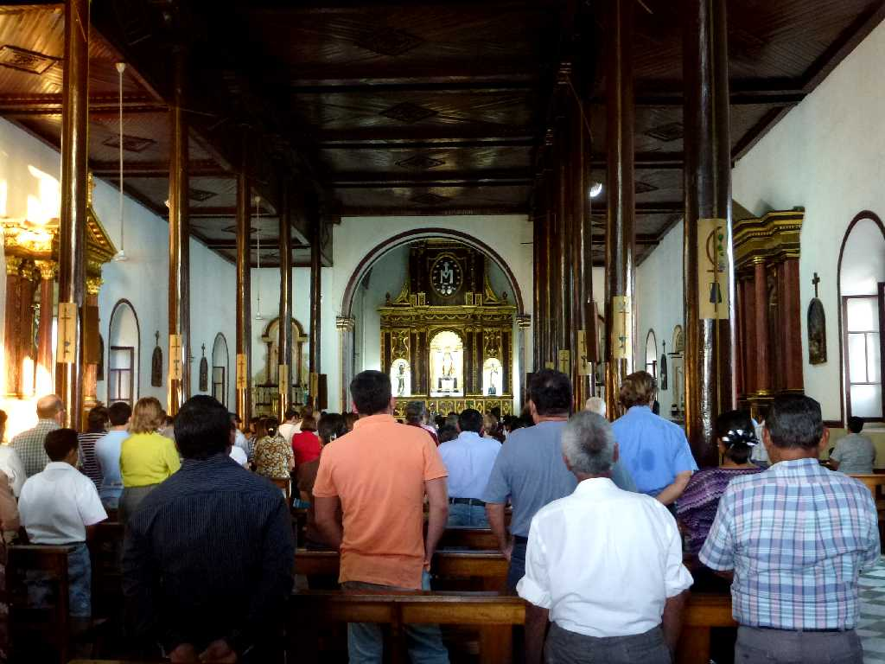
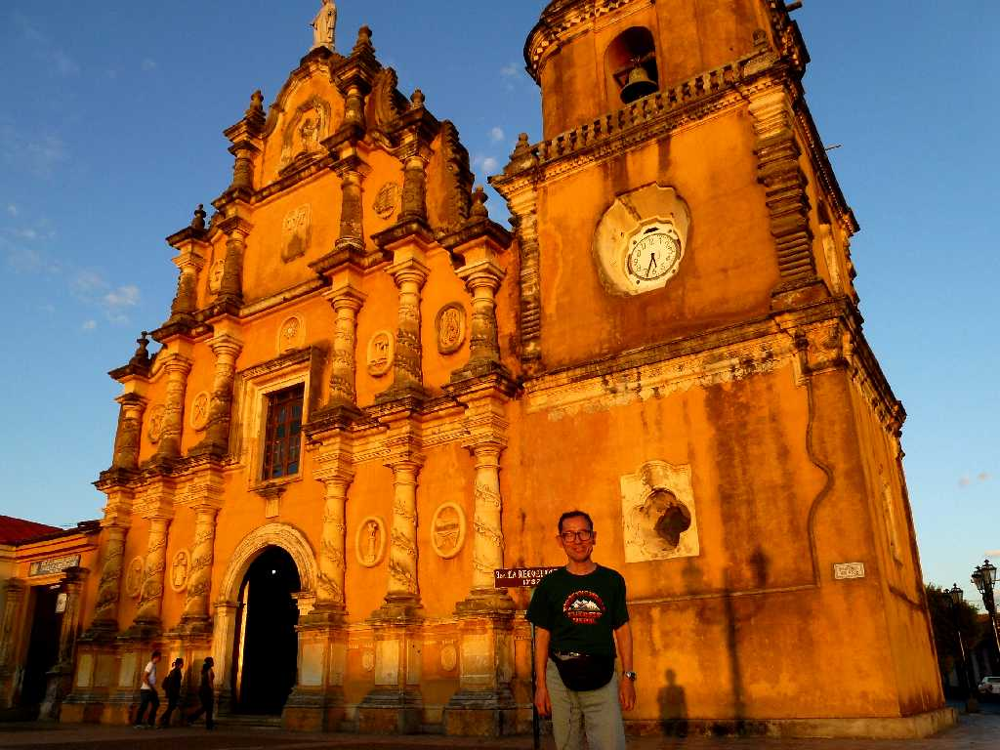

Catedral León
１５２４年に街が形作られ１６１０年モモトンボ山の噴火によりレオンビエホからこの地に都が移され１８３９年から１８５８年までは首都として栄えた

September 29 2010 Catedral roof
コロニアル様式の大聖堂は１７０６年に建造が始り１７４０年に完成した

Catedral León
８０日間世界一周クルーズ以来３年ぶりの再訪問

Altar Catedral
ミサ中

Iglesia La Recolección León
１８世紀に創られたバロック様式の教会

Altar Iglesia La Recolección
ミサ中

February 3 2013 Iglesia La Recolección